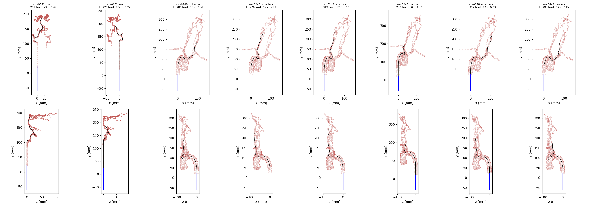
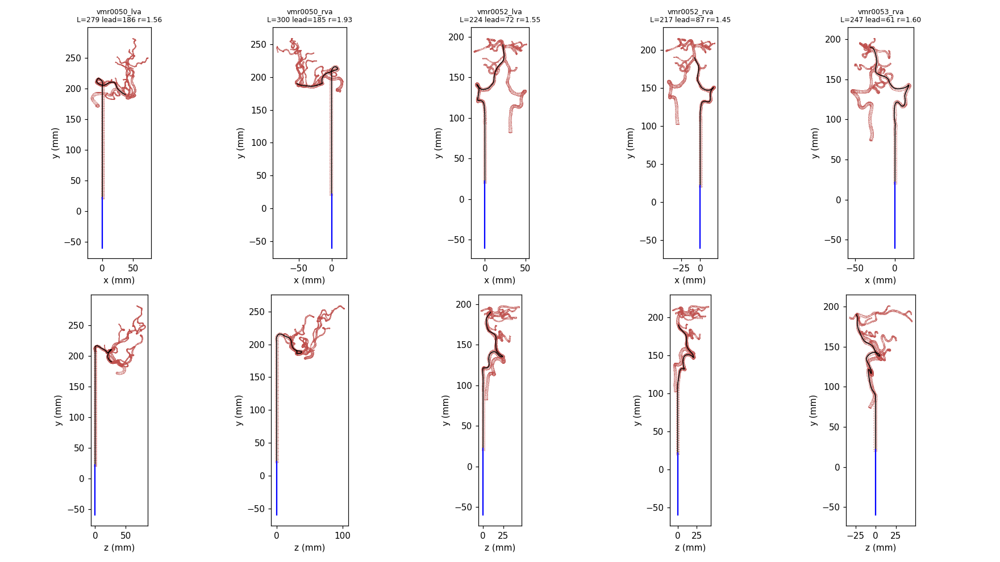

magic-guidewire.github.io · synced from the experiment records · 2026-10-31 01:26 UTC
MAGIC
Magnetic Actuation for Guidewire Intelligent Control
Simulation only · rigid walls, uncalibrated damping
Proximal feed ≤ 5 mm/s · slow-down only
Field ≤ 20 mT · 0.03 T/s
Now: M3d · time-matched objective
We push a 400 mm magnetic guidewire through complete 3D lumens in SOFA. A fixed geometric steering controller (V28) points the magnetic head with an external field. On top of it we learn a low-dimensional policy that may only slow the proximal feed and retune the steering gains. The aim is a smooth, unobstructed passage: fewer head–wall collisions, lower head contact force and steadier tip motion, in a reasonable time. Numbers on this page come from checked full-passage runs; unless stated they are training or development results, not a held-out test.
01 — Live status
What is running now.
M3d · time-matched objective(m3d_timematched_learning_20261030a) — state running, stage bayesian_policy_search.
Full passages in this experiment: 152 finished, 0 failed, 6 running (six run in parallel on CPU). Policy evaluations scored: 3.
Best design meeting every hard constraint so far: eval002. Against same-speed V28 on the 32 training vessels: head ∫F²ds −1.9% (worst vessel +2.9%), tip acceleration −8.0%, mean time −18.22%, tip-speed std +3%.
Adopted controller (passed its development gate and an independent raw audit): A8 eval005. Interrupted runs (machine restarts, app updates) are archived untouched and re-run from scratch; they are never counted.
Roadmap
M1
Same-speed control
✓ done
2026-10-28 · learned gains add no measurable benefit at equal feed
2026-10-28 · slow-down gain holds on 48/48 synthetic vessels
M3
Equal-time feed learning on 32 training vessels
● running
beat uniform slow-down at the same passage time
M4
Ablations
planned
feed only · steering only · no look-ahead · no collision constraint
M5
Physics robustness
planned
friction, stiffness and field limit ±20%
M6
Held-out test, run once
planned
new seed, method frozen first
M7
Paper assets
planned
figures, trajectories, videos
02 — Finding so far
Slowing down is what helped. The learned steering gains did not.
Three successive searches (constrained Bayesian optimisation over ≤ 11 parameters, θ = 0 is exactly V28 at 5 mm/s) produced controllers that passed per-vessel gates on 8 training vessels, an independent raw audit, and 6 development vessels. All three bought large head-force reductions with longer passages:
Controller (development vessels, vs true V28)
Head ∫F²ds
Passage time
Tip acceleration
Tip-speed std
A4 · A2_eval021
−52 … −71%
×1.70 … ×1.94
×0.33 … ×0.66
–
A6 · eval006
−49 … −70%
×1.39 … ×1.48
×0.29 … ×0.64
×0.94 … ×1.27
A8 · eval005 (adopted)
−48 … −68%
×1.49 … ×1.51
×0.37 … ×0.70
×0.62 … ×0.80
The same-speed control (M1)
We then ran V28 with its own steering gains but A8's constant feed (0.66 × 5 mm/s) on the same 14 vessels. It reproduced A8: against it, A8 changed head ∫F²ds by −0.25%, tip acceleration by +0.10%, tip-speed std by −0.03% and time by −0.01% on average. The pre-registered rule required ≥ 10% to keep the “learned field gains” claim; it was not met.
How to read this
Head force scales roughly with feed speed squared in this simulator (fitted exponent ≈ −2 in time), so a uniform slow-down is a strong baseline. Part of that benefit depends on the simulated damping, which is not calibrated against hardware. From M2 on, same-speed V28 is the main baseline: a method has to win at equal passage time.
03 — Generalization (M2)
On 48 unseen vessels the slow-down gain holds on every one.
48 synthetic lumens never used for training or selection, three arms each (true V28, same-speed V28, A8), one fine-precision full passage per arm. All 144 passages completed. A8 against true V28:
−59.0%Head ∫F²ds, mean · worst vessel −52.4% · 48/48 lower
−14.8%Tip acceleration energy, median · mean −0.2%, worst +136.3%
0Change in significant head collisions (re-contact peak ≥ 5 mN)
Figure 1. Each dot is one of 48 unseen vessels: head ∫F²ds change of same-speed V28 (x) and of A8 (y), both against true V28. The dots sit on the diagonal: against same-speed V28, A8 differs by −0.87% on average (worst −0.23%). Hover a dot for its values.
By geometry class
Class
n
∫F²ds mean
worst
Accel. median
Time
Sharp bends
16
−60.0%
−55.2%
−19.0%
+50.4%
Compound bends
5
−56.0%
−55.2%
+3.0%
+51.5%
Torsion
16
−57.2%
−52.4%
−41.6%
+50.7%
Narrow lumen
12
−56.5%
−52.4%
−31.5%
+50.9%
Classes overlap (a vessel can be sharp and narrow). Tip acceleration is not consistently better: the median falls, but the worst vessel rises +136%. Smoothness is what the current work (M3) has to earn.
04 — Patient-derived routes
13 fixed routes through real branched vessels. The first run exposed measurement artefacts; the fixed set now shows real navigation outcomes.
Routes were built from seven Vascular Model Repository projects: retrograde through the aortic arch into the carotid, external carotid, subclavian and vertebral arteries, and up the vertebral arteries into the basilar. Each route is fixed; every non-route outlet keeps its original cap, so entering a wrong branch ends at a real wall. A straight lead-in is extruded from the exact inlet cross-section so the simulator's insertion contract holds; its length is recorded per route.

Figure 2. Route centerlines (black), lumen vertices (red) and the straight initial wire line (blue), two orthographic views per route. Geometry previews, not simulation trajectories.

Figure 3. Route centerlines (black), lumen vertices (red) and the straight initial wire line (blue), two orthographic views per route. Geometry previews, not simulation trajectories.
Route (first run, route set v1)
Group
True V28
A8
A8 vs V28 ∫F²ds
vmr0050_lva
Vertebrobasilar
audit clip planes incompatible
audit clip planes incompatible
–
vmr0050_rva
Vertebrobasilar
whole rod sample penetration at 117/300 mm
whole rod sample penetration at 134/300 mm
–
vmr0051_lva
Vertebrobasilar
audit clip planes incompatible
audit clip planes incompatible
–
vmr0051_rva
Vertebrobasilar
success
success
−39.5%
vmr0052_lva
Vertebrobasilar
whole rod sample penetration at 19/223 mm
whole rod sample penetration at 21/223 mm
–
vmr0052_rva
Vertebrobasilar
success
success
−40.1%
vmr0053_rva
Vertebrobasilar
wall penetration at 113/246 mm
wall penetration at 113/246 mm
–
vmr0248_bct_rcca
Aortic arch
wall penetration at 158/280 mm
wall penetration at 204/280 mm
–
vmr0248_lcca_leca
Aortic arch
wall penetration at 153/279 mm
wall penetration at 153/279 mm
–
vmr0248_lcca_lica
Aortic arch
wall penetration at 153/312 mm
wall penetration at 153/312 mm
–
vmr0248_lsa_lva
Aortic arch
wire looped in the arch; stopped at full insertion
wall penetration at 184/233 mm
–
vmr0248_rcca_reca
Aortic arch
wall penetration at 157/312 mm
wall penetration at 202/312 mm
–
vmr0248_rsa_rva
Aortic arch
wall penetration at 162/295 mm
wall penetration at 167/295 mm
–
Both controllers failed on the same routes in the same way, so we diagnosed the runs from the saved 6 ms rod states rather than the controllers:
Aortic arch and one vertebral route — a sign-rule artefact. The head-clearance guard signed the wall distance by the direction toward the route centreline. That is exact in a round tube, but in the arch and at branch ostia the wall normal deviates 22–68° from that direction. At every stop the exact distance was +0.02 … +0.5 mm and a generalised winding number confirmed the head was inside the lumen, while the guard read −0.06 … −0.15 mm. The SOFA contact itself never penetrated.
Two vertebral routes — our lead-in construction. Cutting the inlet by whole triangles left a jagged loop, and the extruded lead-in had folds (adjacent normals up to 171°) where a one-face normal sign flips.
Two routes — audit planes. Their final direction turned back toward the inlet, so the audit's outlet half-space clipped the deployed wire.
One genuine failure: V28 looped the wire in the arch on the subclavian–vertebral route.
Route set v2 cuts the inlet with an exact plane (clean lead-ins, folds ≤ 17°), trims route ends so the audit half-spaces never clip the wire, and runs with an exact signed clearance (closest-feature pseudo-normals on the same full-mesh BVH; identical to first order in round tubes). Smoke runs of V28 on the three failing route types now pass their old stopping points with clean audits: a vertebral route advances 154 mm (stopped at 113 mm before), a narrow vertebral lead-in is traversed, and in the aortic arch the wire is no longer stopped — but after 150 mm its tip leaves the route: V28 does not enter the left common carotid ostium. Branch selection in the arch is a real navigation problem at 20 mT, and it is what the full v2 evaluation will measure.
05 — Current work (M3)
Beat uniform slow-down at the same passage time.
Training now uses 32 vessels (8 earlier + 24 new). Every policy is scored per vessel against same-speed V28; hard constraints: every passage succeeds, mean time within +1% (worst vessel +12%), worst-vessel tip acceleration within +30%, no more significant collisions.
M3 · absolute load feedback
Slow down when filtered head load exceeds a fixed 8 mN reference. On the 24 new, low-load vessels the feed saturated at 5 mm/s: time −28 … −33%, head ∫F²ds +53 … +144%. A fixed reference cannot fit vessels of different load levels. Stopped.
M3b · relative load feedback
Compare fast and slow low-passes of the same vessel's head load: slow down above the vessel's own recent level, catch up below it. Head ∫F²ds −19 … −20% on every vessel at equal mean time, but the feed changed too abruptly: worst-vessel tip acceleration +56 … +80%. Stopped.
M3c · rate-limited
Same law with a limit on how fast the feed may change, and smoothness in the objective. First design meeting every constraint: eval002, head ∫F²ds −1.9%, tip acceleration −8.0%, mean time −18.22%. Its tip-speed std rose +3% — the feed is deliberately non-uniform. On the 6 development vessels (not used for selection) eval002 succeeded 6/6 with no significant collision and cut head ∫F²ds on every vessel against same-speed V28 (−9 … −19%), but it was also 4 … 7% slower there, so this is not yet an equal-time win. Stopped in favour of M3d.
meets all hard constraintsviolates a hard constraint
Figure 4. The 3 scored feed policies of the current search on the 32 training vessels, against same-speed V28. Filled: meets every hard constraint; ring: violates one. The shaded band is the mean-time limit. Hover a point for all metrics.
Next: time-matched scoring (M3d)
Small time differences blur the comparison, because force falls steeply with time. Re-scoring every M3c design against a per-vessel uniform baseline interpolated to the policy's own passage time gives an equal-time gain of about −8 … −11% in head ∫F²ds and −4 … −9% in tip acceleration. That is close to, but not yet reliably above, the 10% bar, and every design still has a vessel where force does not fall. M3d searches on this time-matched objective with a stronger penalty on speed fluctuation; it has been running since 30 Oct, warm-started from the nine re-scored M3c designs (four meet its constraints).
06 — Method
Real physics first, then a small learned policy.
01 Scene
SOFA discrete elastic rod (121 nodes, 400 mm, 26.7 mm magnetic head), strict matrix-free contact with exact full-mesh queries, 6 ms physics step, 54 ms control. Field ≤ 20 mT, slew 0.03 T/s, field turn ≤ 150°/s.
02 Baseline
V28: three frozen networks plus geometric wall-normal steering and a head-clearance amplitude term, constant 5 mm/s feed. It is kept unchanged as the reference.
03 Policy
Bounded residuals on V28's steering gains and a feed multiplier φ ∈ [0.2, 1] (never faster than 5 mm/s), filtered and rate-limited; all integrals use the real step length.
04 Gates
Constrained Bayesian optimisation on training vessels; per-vessel hard limits on success, collisions and time; development vessels and an independent raw recomputation before adoption. The held-out test seed is used once, at the end.
07 — What this does not show
Simulation, rigid walls, one wire.
All results are simulated. Walls are rigid; there is no blood flow; materials, magnetization, friction and damping are not calibrated against hardware.
The current improvement comes from a uniform slow-down. A learned advantage at equal time is not established yet (M3 is in progress).
Development vessels were used repeatedly; the 48 generalization vessels and the patient-derived routes were not used for selection; the held-out test has not been run.
The wire is 1 mm in diameter, wider than clinical neurovascular wires; patient-derived routes are mostly failing and are reported as failure modes.
Each comparison is one deterministic full passage per vessel and arm (fine precision); there are no multi-seed statistics.